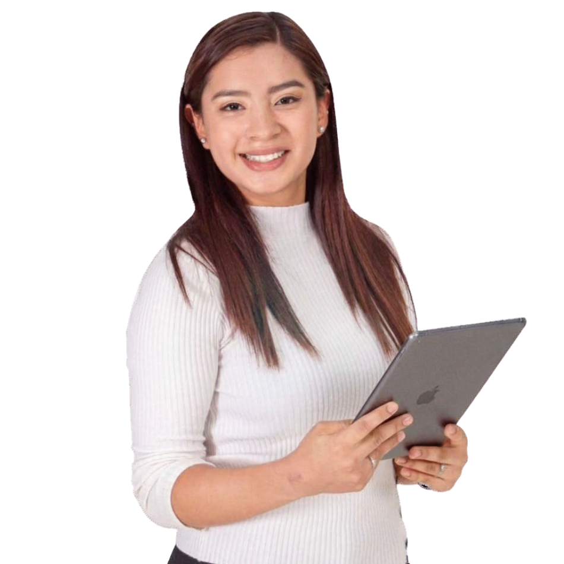
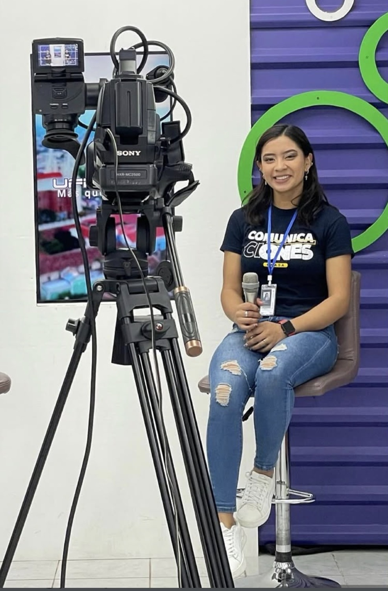

Presentación
Presentación frente a cámara en programas televisivos, eventos y espacios informativos, con enfoque en una comunicación clara, profesional y efectiva.
↗COMUNICACIÓN · PERIODISMO · PRESENTACIÓN
Soy María Galicia, comunicadora enfocada en la presentación y el periodismo, con una vocación por informar, contar historias y conectar con las personas. Me caracterizo por mi desenvolvimiento frente a cámara, mi capacidad de adaptarme a distintas audiencias y mi compromiso con una comunicación clara, profesional y cercana.

Mi trabajo une información, creatividad y conexión humana.
✳LO QUE HAGO
Cada formato representa una oportunidad para comunicar con propósito, transmitir información relevante y establecer conexiones significativas con diversas audiencias.
Presentación frente a cámara en programas televisivos, eventos y espacios informativos, con enfoque en una comunicación clara, profesional y efectiva.
↗Investigación periodística, redacción de contenidos informativos y cobertura de acontecimientos de interés público, con rigor y enfoque en las audiencias.
↗Locución profesional para la transmisión de mensajes informativos e institucionales, con claridad, expresividad y dominio de la voz.
↗
COMUNICACIÓN CON PROPÓSITOUN POCO SOBRE MÍ
Me caracterizo por mi desenvolvimiento frente a cámara, facilidad de expresión y capacidad para conectar con diferentes audiencias. Destaco por mi creatividad, pensamiento estratégico, adaptabilidad y compromiso con una comunicación ética y responsable. Afronto cada proyecto con iniciativa, sensibilidad y disposición para aprender, aportar ideas y transformar mensajes en experiencias comunicativas de valor.
Conocé mi historia →PORTAFOLIO